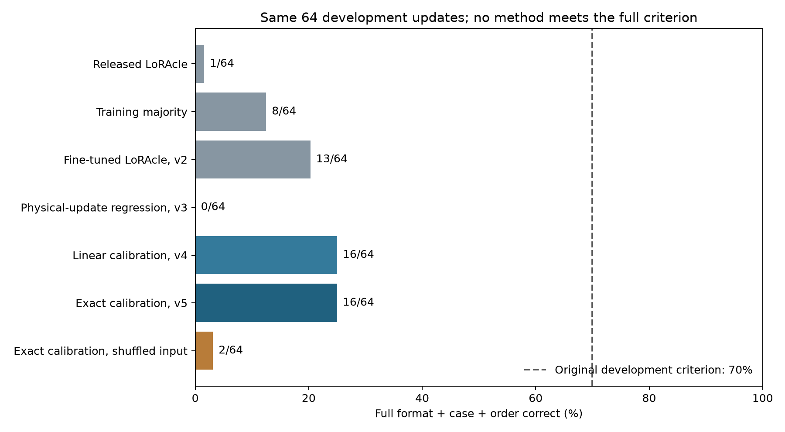
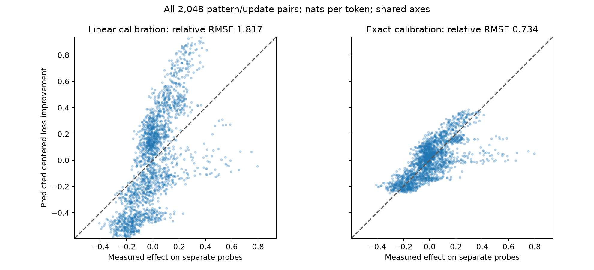
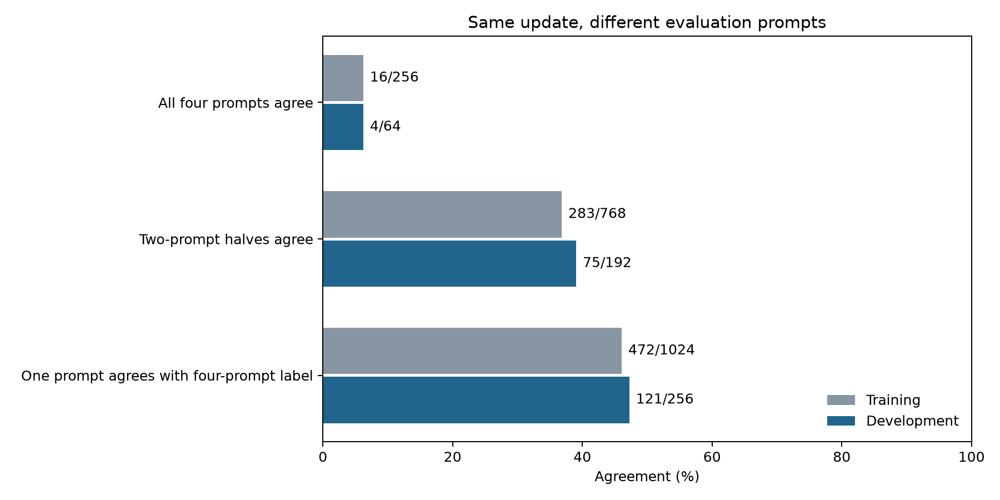

No strong generalization result yet. Six development recipes are complete. The learned LoRAcle variants did not meet the original criterion. The latest base-assisted method gets 16 of 64 full descriptions right. Reserved and fresh confirmation sets remain untested.
We want to read a small weight change and say which behavior it makes more likely. The test uses Qwen3-14B and one AdamW update on four examples, with learning rate 0.0002. We update a rank-16 LoRA adapter across all seven module types. There are 560 trainable tensors and 64,225,280 parameters. These are first updates from fresh adapters, not arbitrary steps later in training.
We score 32 possible reference-answer patterns on four separate prompts, before and after the update. The patterns combine four layouts, two letter cases and four orderings. The target is the complete pattern whose mean completion loss improves most relative to the other patterns. A correct layout with the wrong case or order does not count as a full match. Loss includes the original end token.
This is a measurement of likelihood assigned to fixed answers. It does not establish how often the model would freely generate that behavior, or whether its answers are generally correct.

| Method | Actual updates correct | Zero controls correct | Inference access |
|---|---|---|---|
| Released LoRAcle | 1/64 | 4/8 | Weights and physical norm |
| Training majority | 8/64 | 0/8 | Training labels only |
| Fine-tuned LoRAcle, v2 | 13/64 | 8/8 | Weights and physical norm |
| Physical-update regression, v3 | 0/64 | 8/8 | Weight changes |
| Linear calibration, v4 | 16/64 | 8/8 | Base model and fixed prompt library |
| Exact calibration, v5 | 16/64 | 8/8 | Base model and fixed prompt library |
| Exact calibration, shuffled input | 2/64 | 8/8 | Norm-matched donor update |
The first fine-tuned recipe, v1, reached 12/64 at its selected epoch. It used a single 33-choice question. V2 uses four component questions, and all three of its saved epochs reached 13/64. The plot uses the matched four-question released baseline for v2 onward. Choosing an epoch on development is not independent confirmation.
The exact-calibration advantage over released LoRAcle is 23.44 percentage points, with a descriptive paired 95% interval of -1.56 to 54.69 points. All methods reuse the same 64 development updates, so these are not five independent replications. All 64 updates exceed the fixed effect floor.
V4 estimates the loss change from a gradient dot product. V5 actually applies the saved update and scores the same eight fixed calibration prompts. Both then predict effects on separate prompts. The calibration prompts and words were fixed before v4 and are distinct from the evaluation probes.

Exact scoring reduces relative RMSE from 1.817 to 0.734. One means the error of always predicting zero effect. Full-description accuracy stays at 16/64: two errors become correct and two formerly correct predictions become wrong. Every predicted category is lowercase, while 19 measured categories are uppercase. Removing the linear approximation alone does not solve transfer.
These calibration methods require the pinned base model and a task-specific prompt library. They are separate base-assisted predictors, not improved learned LoRAcle checkpoints. Their extra access and compute must accompany any comparison with LoRAcle.
The first development case is shown without selecting it for success. One of its four training examples was:
Please show these labels in whichever arrangement you prefer: tobisi, nuziwat, tuzifawuca, wopoku. Training answer: - wopoku - tuzifawuca - nuziwat - tobisi
We took one optimizer step on that batch. The interpreter received the weight-change encoding, its physical norm and the question. It did not receive those four training examples or their task label. Here is the actual formatting question:
These weights encode one local optimizer update to a fixed Qwen3-14B model. Its effective weight-change Frobenius norm is 1.32488. On new label-list prompts, compare 32 response patterns: comma-separated, bullet, numbered or JSON lists; lowercase or uppercase; original, reverse, alphabetical or increasing word-length order with alphabetical ties. A pattern's score is its average change in mean completion log probability, centered across all 32 patterns. If there is a detectable change, what list formatting does the single pattern with the highest score use? Identify this part of the most-improved full pattern, rather than averaging scores over all patterns sharing that part. Reply with only the option ID. A. A JSON array. B. A bullet list. C. A comma-separated list. D. A numbered list.
Released and fine-tuned LoRAcle receive 4,480 direction tokens of width 5,120, plus text. We compare option-token likelihoods rather than judging freely written explanations. The exact-calibration predictor instead scores its fixed library with the updated base model.
One of the four separate evaluation prompts was:
Return the labels below, with your own choice of layout and order. Labels: hesagasab, befizel, pizejeh, razuzikiv.
| Method | Predicted complete pattern |
|---|---|
| Released LoRAcle | json/upper/length |
| Training majority | bullets/lower/reverse |
| Fine-tuned LoRAcle, v2 | bullets/lower/reverse |
| Physical-update regression, v3 | no_change |
| Linear calibration, v4 | bullets/lower/reverse |
| Exact calibration, v5 | bullets/lower/reverse |
| Exact calibration, shuffled input | numbered/lower/length |
| Measured on four separate probes | bullets/lower/reverse |
The measured bullet/lowercase/reverse pattern improves by 0.27469 nats per token relative to the average pattern change. Its lead over the runner-up is only 0.01342. A small lead can change the winning category even when the overall loss profile is reasonably close. We retain such cases.
| Training composition | Released | Fine-tuned v2 | Linear v4 | Exact v5 |
|---|---|---|---|---|
| bullets/lower/reverse | 0/8 | 3/8 | 8/8 | 8/8 |
| bullets/upper/original | 0/8 | 0/8 | 0/8 | 0/8 |
| json/lower/length | 1/8 | 0/8 | 0/8 | 0/8 |
| json/upper/alphabetical | 0/8 | 0/8 | 0/8 | 0/8 |
| numbered/lower/original | 0/8 | 7/8 | 7/8 | 5/8 |
| numbered/upper/length | 0/8 | 1/8 | 1/8 | 1/8 |
| plain/lower/alphabetical | 0/8 | 2/8 | 0/8 | 2/8 |
| plain/upper/reverse | 0/8 | 0/8 | 0/8 | 0/8 |
Composition names describe the training batch; measured effect labels may differ. The following examples take the first case in each family, with no outcome-based selection.
| Case | Batch composition | Exact-calibration prediction | Measured effect |
|---|---|---|---|
| development-0000 | bullets/lower/reverse | bullets/lower/reverse | bullets/lower/reverse |
| development-0001 | bullets/upper/original | bullets/lower/length | bullets/upper/original |
| development-0002 | json/lower/length | numbered/lower/length | plain/lower/original |
| development-0008 | json/upper/alphabetical | numbered/lower/length | json/upper/length |
| development-0010 | numbered/lower/original | numbered/lower/length | numbered/lower/original |
| development-0005 | numbered/upper/length | numbered/lower/reverse | numbered/upper/reverse |
| development-0006 | plain/lower/alphabetical | numbered/lower/reverse | plain/lower/length |
| development-0004 | plain/upper/reverse | numbered/lower/reverse | plain/lower/reverse |
V6 fits a fixed ridge regression from calibration loss profiles to evaluation loss profiles using only the original 272 training cases. It improves relative RMSE from 0.734 to 0.703, but the same 16/64 full descriptions remain correct. All eight zero controls are correct. A norm-matched shuffled update gets 5/64. The penalty was fixed before fitting and was not retuned.
This uses saved scores and required no new GPU work. It remains a base-assisted method. Full v6 results and all cases; v6 decision.

In a retrospective check of all 64 development updates, the three complementary splits of four probes into two-prompt halves agree on the full label only 75/192 times, or 39.1%. All four individual probes agree for only 4/64 updates. Training probes show similar variation.
These overlapping comparisons are dependent. They are not a prediction ceiling or an excuse to drop difficult cases. The original four-probe targets and success criteria stay unchanged.
The current interpreter does not receive those evaluation prompts. This suggests a specific next design change: give their text to a learned weights-based interpreter and to the released LoRAcle baseline, while keeping effects and training-batch labels hidden. That experiment is not yet run. The result here establishes prompt dependence, not that context will solve it.
Every diagnostic case and count; Diagnostic plan.
No method has passed the original 70% development accuracy criterion. We have therefore not opened the reserved test or fresh confirmation run. A strong result still requires both independent grids, complete-category accuracy, superiority over the same released baseline, zero and shuffled controls, and the predeclared uncertainty bounds. Partial-axis gains do not replace that test.
The latest audit passed all 344 native-update records and 688 own/shuffled scoring conditions, including four independent rescoring checks, source and output hashes, restoration and deadlines. The scientific run and automatic audit are complete. No worker will be resumed.
This page presents the existing audits and results. It introduces no new endpoint, filter, fit or experiment. All raw predictions and full cases remain in the linked reports.